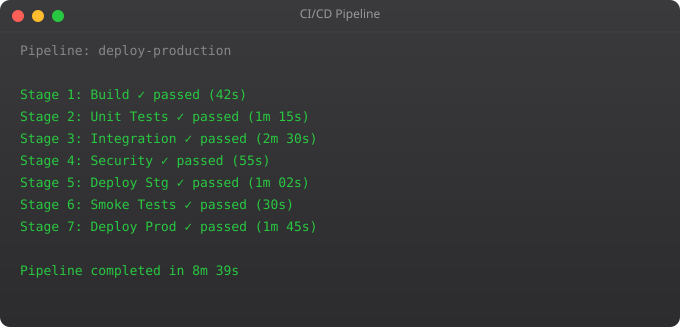

Git is not optional for DevOps work. Every CI/CD pipeline starts with a Git push. Every infrastructure change is tracked in a Git repository. Every rollback is a revert to a previous Git commit. Git is the single most important tool in the modern software development ecosystem, and DevOps engineers need to understand it at a deeper level than basic add/commit/push.
git init # Initialise new repo
git clone https://github.com/... # Clone remote repo
git status # What changed?
git add file.txt # Stage specific file
git add . # Stage all changes
git commit -m "feat: add login" # Commit with message
git push origin main # Push to remote
git pull origin main # Pull latest changes# Create and switch to feature branch
git checkout -b feature/user-auth
git switch -c feature/user-auth # modern syntax
# Make changes and commit
git add .
git commit -m "feat: implement JWT authentication"
# Push branch to remote
git push -u origin feature/user-auth
# Merge via Pull Request on GitHub, or locally:
git checkout main
git merge feature/user-auth --no-ff # Preserve merge commit
git push origin main
# Delete branch after merge
git branch -d feature/user-auth
git push origin --delete feature/user-auth# Merge: preserves history, creates merge commits
git checkout main
git merge feature-branch
# Rebase: linear history, rewrites commits
git checkout feature-branch
git rebase main
# Interactive rebase: clean up commits before PR
git rebase -i HEAD~3 # Modify last 3 commits
# Golden rule: NEVER rebase shared/public branches
# Rebase is for local cleanup before opening a PR# Format: type(scope): description
feat: add user authentication
fix: resolve memory leak in worker
docs: update deployment guide
style: format code with black
refactor: extract validation logic
test: add unit tests for payment service
chore: update dependencies
ci: fix Docker build cache issue
perf: optimise database query
BREAKING CHANGE: change API endpoint format
# Example commit messages in a DevOps project
git commit -m "ci: add trivy security scan to pipeline"
git commit -m "feat(k8s): add horizontal pod autoscaler"
git commit -m "fix: correct nginx config for HTTPS redirect"# Install pre-commit framework
pip install pre-commit
# .pre-commit-config.yaml
repos:
- repo: https://github.com/pre-commit/pre-commit-hooks
rev: v4.4.0
hooks:
- id: trailing-whitespace
- id: end-of-file-fixer
- id: check-yaml
- id: detect-private-key # Never commit secrets!
- repo: https://github.com/psf/black
rev: 23.3.0
hooks:
- id: black
# Activate hooks
pre-commit installGitOps extends Git beyond application code to infrastructure. Your entire system state -- Kubernetes manifests, Terraform configs, Helm charts -- lives in Git. When you merge a PR, an automated system like ArgoCD or Flux detects the change and applies it to the cluster. The Git repository becomes the single source of truth for your entire infrastructure.
# In a GitOps setup:
# 1. Developer pushes code to application repo
# 2. CI pipeline builds Docker image, pushes to registry
# 3. CI pipeline updates image tag in infrastructure repo
git clone https://github.com/myorg/k8s-configs
cd k8s-configs
sed -i "s/image: myapp:.*/image: myapp:$NEW_TAG/" apps/myapp/deployment.yaml
git commit -m "ci: update myapp to v1.2.3"
git push
# 4. ArgoCD detects change in Git, syncs to Kubernetes automaticallyMerge creates a merge commit that shows where branches joined. Rebase moves your branch commits to start after the latest commit in the target branch, creating a linear history. Use merge for shared branches. Use rebase to clean up local feature branches before creating a pull request.
git reset HEAD~1 -- unstages last commit, keeps changes. git revert HEAD -- creates a new commit that undoes the last commit (safe for shared branches). git reset --hard HEAD~1 -- discards last commit AND changes (destructive). Always prefer revert for commits already pushed to shared branches.
Tags mark specific commits as important -- typically release versions. git tag -a v1.2.0 -m "Release 1.2.0". They appear in GitHub releases. CI/CD pipelines often trigger production deployments only when a tag is pushed, using this as the deployment signal.
A file that tells Git which files/directories to ignore. Always ignore: node_modules/, .env, venv/, __pycache__/, *.pyc, .DS_Store, build/, dist/, *.log. Never commit secrets, compiled files, or local development settings to version control.
GitOps uses Git as the single source of truth for infrastructure and application configuration. Changes to infrastructure are made through pull requests, not manual commands. Tools like ArgoCD and Flux watch Git repos and automatically apply changes to Kubernetes clusters when PRs are merged.
In Part 4, we cover Linux networking -- the commands and concepts needed to debug and configure network issues in production systems.
← Back to Blog